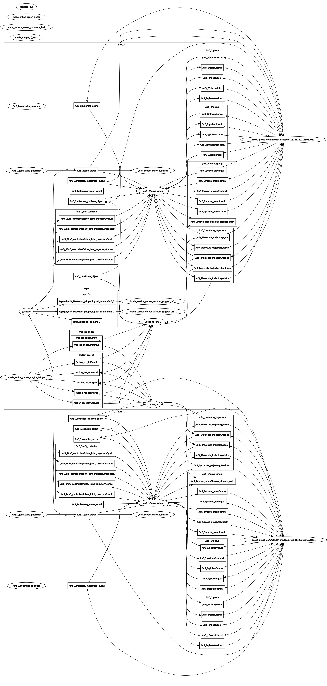
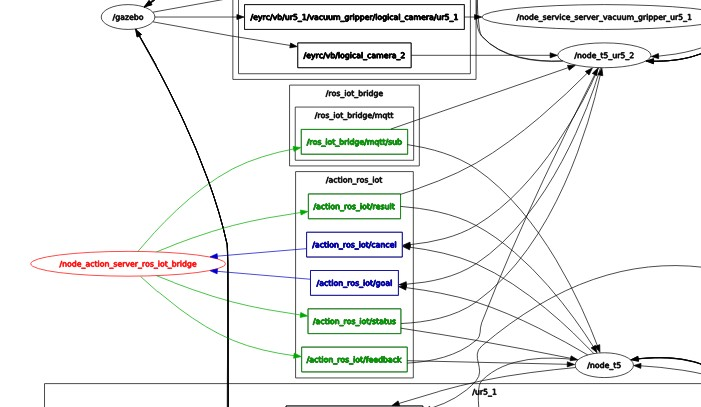
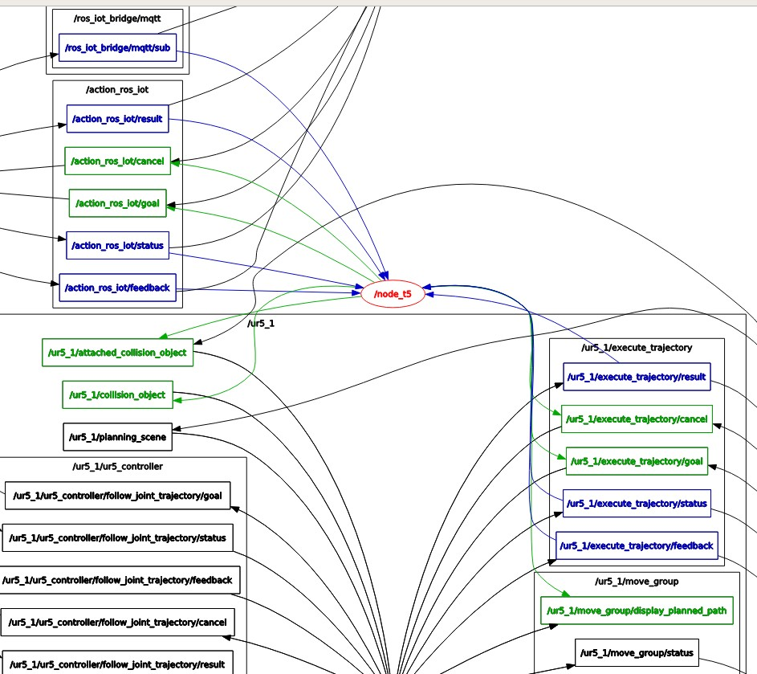
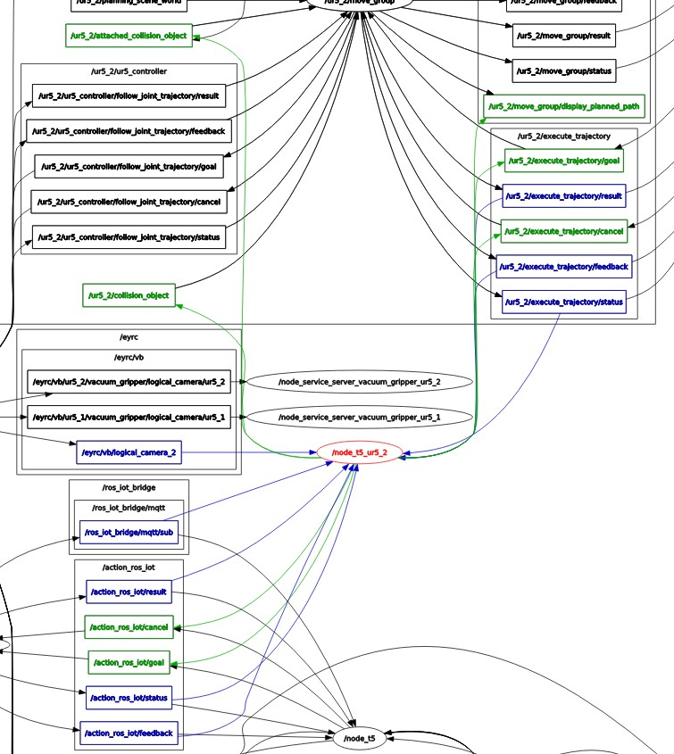

IMPLEMENTATION
RQT Graph of the entire Implementation
RQT Graph of entire implementation showing ungrouped action servers

RQT Graph of entire implementation showing grouped action servers
Enlarged RQT Graph section of node_action_server_ros_iot_bridge

Once all the required nodes are launched, the node_action_server_ros_iot_bridge, which acts as a bridge between the iot servers and the local ros nodes recieves orders from the mqqt server topic /eyrc/vb/JAADjaad/orders, once orders reach the bridge, the same orders are published onto local topic /ros_iot_bridge/mqtt/sub, All the ros nodes requiring orders can subscribe to the local topic to receive it.
This node also manages and behaves like an action server that can recieve goals from multiple action clients. Internal action topic such as /action_ros_iot are repsonsible for the same. The results obtained from the action clinets in form of goals are the published to multiple spreadsheets depending on the nature of the goal obtained. All communication to and from the internet happens through this node. Hence this acts as a bridge between the two.
Enlarged RQT Graph section of node_t5

This is the first action client that contains classes responsible for sending goals to the action server , also this node performs image processing on the packages on the shelf, and initializes the ur5_1 arm and makes it ready for further tasks.
Once all the classes are initialized the node is subscribing to topics /eyrc/vb/camera_1/image_raw to categorize the packages based on the color obtained from QR code decoding and the local mqtt sub topic ros_iot_bridge/mqtt/sub in order to recieve the orders.
Before recieving the orders three different lists of colors are made, these lists will contain tuples of the packages segregated based on the color, this list will later be used to pick the packages after mapping it with the appropriate Item recieved from the orders, i.e Red->Medicine, Yellow->Food, Green->Clothes.
The first name in the list of colors is sent as an argument to a function which will pick the appropriate package from the shelf and place it on the conveyor belt.
This process keeps on repeating for all the orders on the subtopic ros_iot_bridge/mqtt/sub.
Upon placing the packages on the conveyor the details of the order are encoded into a string and sent to the action server where it is decoded from string into readable format and this is goal which is sent calls the OrdersDispatched spredsheet updation functions in the action server which will proceed with the publishing , while the node_t5 is ready to perform the next pick and place task.
This process continues for all the orders recieved on the sub topic.
Enlarged RQT Graph section of node_t5_ur5_2

This is the second action client that talks with the action server , does image processing tasks and also initializes the ur5_2 arm. This node subscribes to the /eyrc_vb_logical_camera_2 node and uses these data to send the values encoded into a string to the action server which will manage the the spreadsheet updation for the inventory sheet, this is done for all the detected packages.
As and when the packages are detected under logical_camera_2, node will check if the package is red, yellow or green and also when the package is exactly under the camera the ur5_2 arm is enabled to perform picking action. This is followed by dropping the packages in respective bins.
As soon as the package is dropped into the bin, node/action client will send goal to server which will update the OrdersShipped spredsheet in Inventory Management Spredsheet.